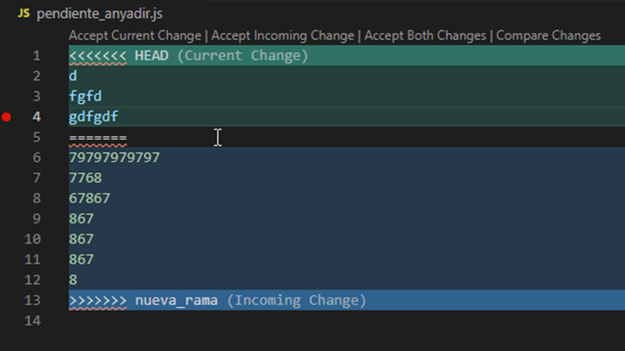

Git permite bifurcar el desarrollo de forma que se puedan evolucionar el proyecto por diferentes caminos a partir de un punto común, por ejemplo crear y probar una nueva librería en paralelo con el desarrollo principal del proyecto. Posteriormente es posible unir las ramas para continuar el proyecto en una única (normalmente conocida como master).
Las tareas comunes con ramos son:
- Crear ramas.
- Moverse entre ramas.
- Fusionar ramas.
Crear y moverse por las ramas
En un instante dado sólo es posible estar en una rama de las existentes, para ver la rama actual:
git branchEn la imagen se puede ver que la rama principal master (la única) ya que se encuentra en HEAD, además de indicar el hash (parcial) de la confirmación actual.
Para crear una nueva rama ejecutar el comando:
git branch nombre_rama
Y para cambiar a esa rama:
git checkout nombre_rama
Si se quiere crear y cambiar en el mismo comando:
git checkout -b nombre_ramaFusionar ramas
Se han realizado diferentes confirmaciones en la nueva rama y se desea integrar los cambios en la rama principal.
- El caso más sencillo es que el propio Git pueda fusionar la rama en caso de no existir conflictos (escritura de secciones de código en ambas ramas que no es capaz de resolver).
git checkout nombre_rama_destino
git merge nombre_rama_origenDonde nombre_rama_destino es la que se introducen los cambios con respecto a nombre_rama_origen.
- Otro caso es la realización de modificaciones en el código en ambas ramas que entran en conflicto. Es necesario decidir qué parte del código se fusiona, la original o la de la otra rama.
Se han encontrado conflictos que no se pueden resolver, además de añadir marcadores en el fichero destino con los conflictos para que se resuelvan manualmente. Existiendo también herramientas gráficas como git mergetool o integradas en la mayoria de los IDE’s.
